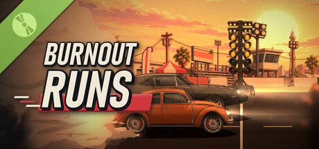
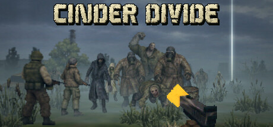

01 / DADOS DA TRANSMISSÃO
Benchmark
de IA.
Quanto custa ganhar desempenho? Compare o custo por tarefa com a pontuação de cada configuração no Priors. Filtre por fornecedor ou siga a linha das opções mais eficientes.
Painel de referênciaPRIORS / CUSTO × PONTUAÇÃO
02 / ARQUIVO DE JOGOS
Meus jogos.
Quatro jogos, cada um com um jeito diferente de ocupar seu tempo. Veja as imagens ou abra a página de cada jogo na Steam.



03 / FORA DO AR
A próxima
transmissão.
Se quiser acompanhar o que eu fizer a seguir, é nos posts do YouTube que eu apareço.
Ver posts no YouTube